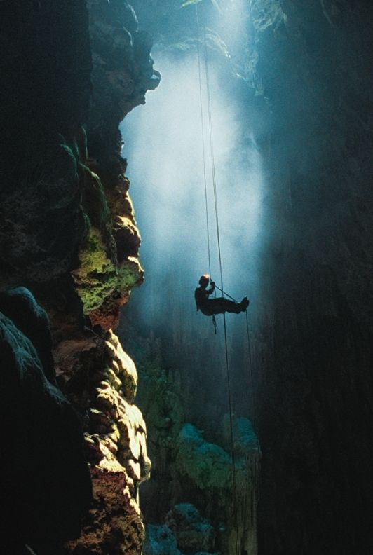
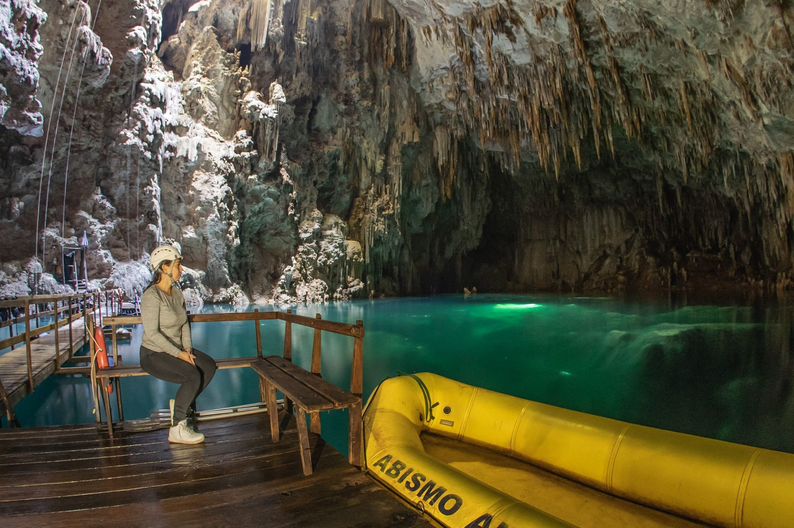
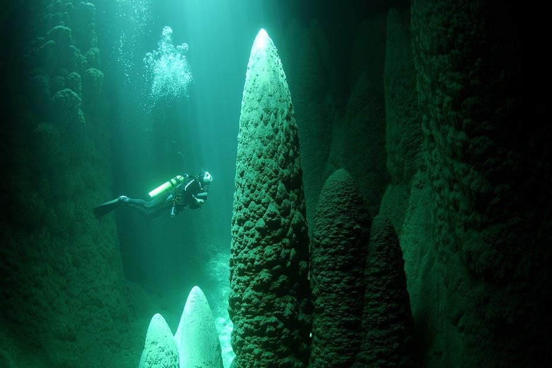

↪ Abyss Anhumas is 23km from the center of Bonito. Access is super easy, through MS-382, which goes to Porto Murtinho. Just take the North exit of the city of Bonito and continue towards the Blue Lake Grotto. Then, follow another 2 km keeping on the right and you will reach our parking lot. All along the way there are signposts.
⫸ Coming to Abyss

● Due to its geological formations, the Anhumas Abyss presents only one way to enter and exit the cave: through a rift. For this, it is necessary to descend 72 meters high through an electric rappel until you reach a floating deck, this being only the first emotion of the tour.
● It is also worth remembering that, despite the initial difficulties of access, it is a safe ride, without the record of serious accidents since its opening.
● Great tour for the adventurous.
⫸ Floating in the Lagoon

● The maximum point of the walk through the abyss is precisely the floating in the lagoon. And best of all, you don't need to know how to swim, since the visitor will have flotation equipment.
● The crystal clear waters of this mysterious lagoon offers an incredible 60 meters of visibility seen from the buoy.
● They use a Neoprene garment: clothing made of synthetic rubber, which in addition to being waterproof, is also a thermal insulating material. Thus, it does not matter the temperature of the water, as the body will always remain at its ideal level.
⫸ Dive

● Another alternative tour is the dive in the lake, to throw yourself once in this incredible experience. Only by diving can one more clearly observe the attractions of the place.
● The lake is 80 meters deep, and even those who have no experience can take advantage of this option.
● In this case, the maximum limit that non-qualified visitors can reach is about 8 meters. The guides will give a practical and theoretical lesson on the process, giving total safety to the dive.
● On the other hand, those who have certification, can go much further and reach 18 meters deep.